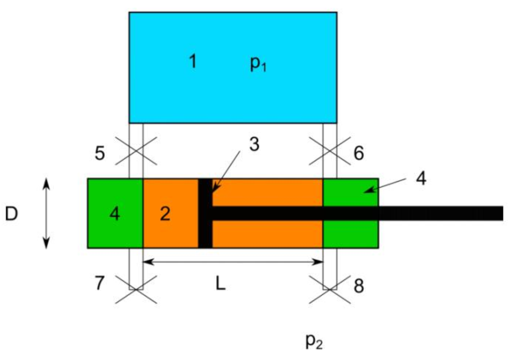
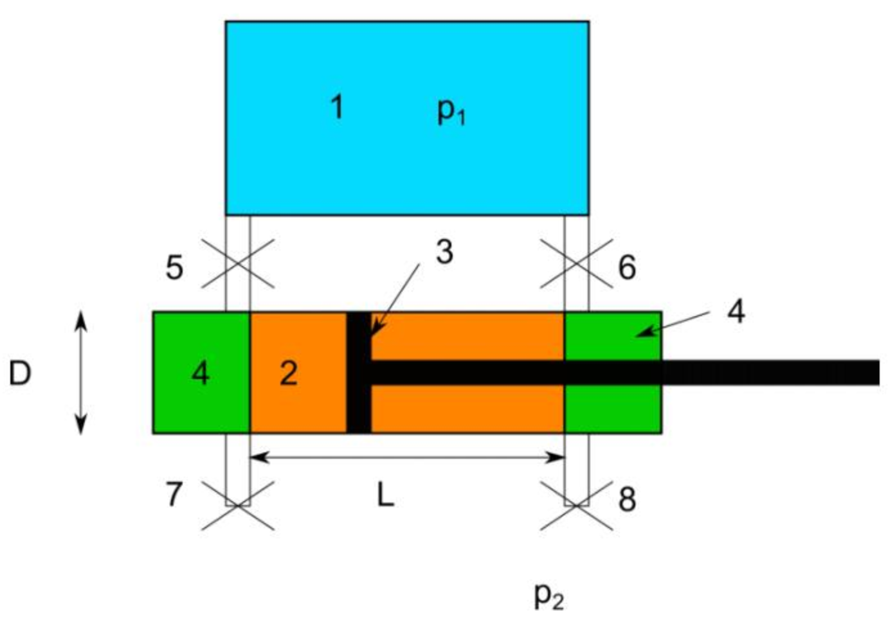

xPhO Physics Club
Đây là các bài tập được đăng trên nhóm xPhO Physics Club. Mỗi ngày sẽ có một bộ bốn bài Cơ - Nhiệt - Điện - Quang được đăng trên nhóm. Mình sẽ đăng tải lại ở đây kết hợp cùng các comment và gợi ý giải bài tập. Chúc các bạn học tốt! Tham gia nhóm Discord của xPhO tại đây.
24 tháng 1 2025
Cơ học - CM.000 - Kỳ thi Vật lý quốc tế Rudolf Ortvay 2014
Một đĩa tròn mỏng khối lượng $m$ bán kính $R$ được cắt thành hai phần bằng nhau. Mỗi phần được gắn một thanh chiều dài $l$ dọc theo trục đối xứng trong mặt phẳng đĩa. Các đầu tự do của thành được gắn vào nhau tạo thành một góc $\alpha$ và các đường cắt của các nửa đĩa song song với nhau. Hệ được đặt trên bàn nằm ngang. Hãy tính tần số dao động nhỏ của hệ. Biết hệ chỉ lăn không trượt.
Gợi ý
Nhiệt học - TSM.001 - Olympic Vật lý Thuỵ Sĩ 2024
Cách đây vài năm, trong một sự kiện hoạt động nhóm, một nhóm học sinh và tinh nguyện viên đă tham gia một chuyến đi thuyền trên Hồ Lucerne. Họ đă may mắn có cơ hội thực hiện chuyến đi trên một chiếc tàu hơi nước, có một bảng dữ liệu được gắn cạnh động cơ hơi nước lớn. Lấy cảm hứng từ câu chuyện này, chúng ta hấy cùng nghiên cứu động cơ hơi nước và suy nghĩ về thiết kế của nó. Hĩnh dưới đây phác họa một động cơ như vậy. Trong đó:
1. Bình chứa hơi nước (màu xanh) với áp suất không đổi $p_1$
2. Xi-lanh (đường kính $D$, vùng màu xanh lá và cam) nơi piston (3) di chuyển trong vùng màu cam trên quãng đường $L$
3. Piston di chuyển bên trong xi Xi-lanh
4. Thể tích tối thiểu $V_0$ (mỗi vùng màu xanh lá) còn lại khi piston ở một trong hai đầu xi Xi-lanh
5 và 6. Các van điều khiển luồng hơi nước từ bình chứa (1) vào Xi-lanh
7 và 8. Các van điều khiển luồng hơi nước từ Xi-lanh ra ngoài, nơi có áp suất $p_2$
 Các thông tin thêm về động cơ hơi nước: Động cơ bao gồm một xi-lanh với đường kính $D$ = 800 mm, áp suất hơi nước $p_1$ = 13 bar (áp suất tuyệt đối). Piston di chuyển trong xi-lanh trên quăng đường $L$ = 1300 mm. Động cơ hoàn thành 48 chu trinh trong mỗi phút.
i. Giả sử rằng khi piston di chuyển từ trái sang phải, các van 5 và 8 luôn mở (6 và 7 đóng). Các van ngay lập tức thay đổi trạng thái khi piston chạm điểm cực phải và bắt đầu di chuyển trở lại về phía bên trái (các van sau đó sẽ lại ngay lập tức chuyển trạng thái khi piston chạm điểm cực trái). Hãy ước tính công suất của động cơ hơi nước theo các biến đã cho và tính giá trị số tương ứng. Nếu cần, hãy đưa ra các giả định, giải thích và chứng minh.
ii. Việc điều khiển các van được mô tả trong nhiệm vụ trước khá không hiệu quả. Thật vậy, khi các van chuyển trạng thái, chúng giải phóng năng lượng được lưu trữ trong hơi nước có áp suất cao $p_1$ ra môi trường (với áp suất $p_2$). Để tối ưu hóa hiệu suất, chúng ta sẽ thay đổi cách điều khiển van: khi piston ở điểm cực trái, van 5 mở nhanh chóng, làm đầy thể tích bên trái (4) bằng hơi nước có áp suất $p_1$. Sau đó, van 5 đóng lại và giữ đóng trong suốt phần còn lại của chu kỳ. Trong khi piston di chuyển sang phải, van 8 luôn mở, trong khi các van khác đều đóng. Giả sử rằng thời gian $\Delta t$ mà van 5 mở là rất ngắn, tức là $\Delta t << T$, với $T$ là chu kỳ của piston. Khi piston di chuyển theo hướng ngược lại, các van mở và đóng tương ứng theo cách tương tự. Hãy ước tính công suất của động cơ dưới dạng công thức và tính giá trị số. Nếu cần thiết, đưa ra các giả định về các biến và đại lượng chưa biết, giải thích và chứng minh.
iii. Công suất trên bảng dữ liệu được cho là 331 kW. So sánh giá trị này với các tính toán của bạn từ câu i và ii, và thảo luận (một cách định tính) về sự so sánh này (tức là tại sao cả hai giá trị khớp khá tốt hoặc tại sao chúng không khớp).
1. Bình chứa hơi nước (màu xanh) với áp suất không đổi $p_1$
2. Xi-lanh (đường kính $D$, vùng màu xanh lá và cam) nơi piston (3) di chuyển trong vùng màu cam trên quãng đường $L$
3. Piston di chuyển bên trong xi Xi-lanh
4. Thể tích tối thiểu $V_0$ (mỗi vùng màu xanh lá) còn lại khi piston ở một trong hai đầu xi Xi-lanh
5 và 6. Các van điều khiển luồng hơi nước từ bình chứa (1) vào Xi-lanh
7 và 8. Các van điều khiển luồng hơi nước từ Xi-lanh ra ngoài, nơi có áp suất $p_2$
 Các thông tin thêm về động cơ hơi nước: Động cơ bao gồm một xi-lanh với đường kính $D$ = 800 mm, áp suất hơi nước $p_1$ = 13 bar (áp suất tuyệt đối). Piston di chuyển trong xi-lanh trên quăng đường $L$ = 1300 mm. Động cơ hoàn thành 48 chu trinh trong mỗi phút.
i. Giả sử rằng khi piston di chuyển từ trái sang phải, các van 5 và 8 luôn mở (6 và 7 đóng). Các van ngay lập tức thay đổi trạng thái khi piston chạm điểm cực phải và bắt đầu di chuyển trở lại về phía bên trái (các van sau đó sẽ lại ngay lập tức chuyển trạng thái khi piston chạm điểm cực trái). Hãy ước tính công suất của động cơ hơi nước theo các biến đã cho và tính giá trị số tương ứng. Nếu cần, hãy đưa ra các giả định, giải thích và chứng minh.
ii. Việc điều khiển các van được mô tả trong nhiệm vụ trước khá không hiệu quả. Thật vậy, khi các van chuyển trạng thái, chúng giải phóng năng lượng được lưu trữ trong hơi nước có áp suất cao $p_1$ ra môi trường (với áp suất $p_2$). Để tối ưu hóa hiệu suất, chúng ta sẽ thay đổi cách điều khiển van: khi piston ở điểm cực trái, van 5 mở nhanh chóng, làm đầy thể tích bên trái (4) bằng hơi nước có áp suất $p_1$. Sau đó, van 5 đóng lại và giữ đóng trong suốt phần còn lại của chu kỳ. Trong khi piston di chuyển sang phải, van 8 luôn mở, trong khi các van khác đều đóng. Giả sử rằng thời gian $\Delta t$ mà van 5 mở là rất ngắn, tức là $\Delta t << T$, với $T$ là chu kỳ của piston. Khi piston di chuyển theo hướng ngược lại, các van mở và đóng tương ứng theo cách tương tự. Hãy ước tính công suất của động cơ dưới dạng công thức và tính giá trị số. Nếu cần thiết, đưa ra các giả định về các biến và đại lượng chưa biết, giải thích và chứng minh.
iii. Công suất trên bảng dữ liệu được cho là 331 kW. So sánh giá trị này với các tính toán của bạn từ câu i và ii, và thảo luận (một cách định tính) về sự so sánh này (tức là tại sao cả hai giá trị khớp khá tốt hoặc tại sao chúng không khớp).
Gợi ý
Điện học - EM.000 - Olympic Vật lý Belarus 2023
Máy phát điện tĩnh điện Kelvin là một thiết bị do William Thomson (Lord Kelvin) phát minh vào năm 1867. Mặc dù cấu trúc đơn giản, nó vẫn có thể tạo ra điện áp lên tới 10 kV. Hiện nay, có rất nhiều phiên bản khác nhau của thiết bị này, và nó thường được xem như một trò chơi thú vị. Trong bài tập này, chúng ta sẽ xem xét một mô hình đơn giản của thiết bị này.
Bình hình trụ 1 chứa nước, được trang bị hai ống nhỏ giọt 2 và 3, từ đó các giọt nước rơi xuống theo khoảng thời gian nhất định. Các giọt nước đi qua các vòng kim loại dẫn điện 4 và 5 và rơi vào các bình cầu kim loại dẫn điện 6 và 7 qua những lỗ nhỏ. Các bình này được kết nối với các vòng (chéo nhau). Nguyên lý hoạt động của máy phát điện tĩnh điện này như sau:
- Ban đầu, các bình số 6 và 7 được nạp lượng điện tích nhỏ với dấu trái ngược nhau $+Q$ và $-Q$; bán kính của các bình này là $R$. Bỏ qua điện hưởng của bình này lên bình kia;
- Một phần của những điện tích này $\pm Q_1$ chuyển sang các vòng 4 và 5; hai vòng này hoạt động như các bản của tụ điện, với điện dung bằng $C$; vì điện dung này nhỏ, nên ta coi rằng $\left|Q_1\right| \ll|Q|$; Bán kính của các vòng là $r$, chúng cách đầu ống nhỏ giọt một khoảng $h$, và độ dày của các vòng rất nhỏ so với bán kính của chúng;
- Điện trường của các vòng tạo ra các điện tích $\pm q$ trên các giọt nước, bán kính của các giọt nước là $a$; khoảng cách từ các bình 6 và 7 tới các giọt là đủ lớn, vì vậy ta có thể bỏ qua ảnh hưởng của điện trường của các bình lên các giọt; Khoảng cách giữa các giọt cũng lớn hơn nhiều so với bán kính của chúng; bình chứa nước số 1 được nối đất.
Như vậy, các giọt nước nhận được điện tích, và khi chúng rơi vào bình, chúng truyền điện tích đó cho bình tương ứng, làm tăng điện tích của bình đó.
1. Giả sử điện tích của mỗi bình là $\pm Q$. Hãy tìm điện tích $\pm Q_1$ phát sinh trên các vòng.
2. Tính điện tích của các giọt nước $\pm q$. Độ lớn của điện tích này có thể được biểu diễn dưới dạng $q=\alpha Q$, trong đó $\alpha$ là một hệ số không có đơn vị. Viết công thức cho hệ số này.
3. Gọi điện tích của các bình trước khi rơi giọt nước đầu tiên là $\pm Q_0$. Tính điện tích của những bình này theo hệ số $\alpha$, sau khi có $N$ giọt rơi vào.
Bình hình trụ 1 chứa nước, được trang bị hai ống nhỏ giọt 2 và 3, từ đó các giọt nước rơi xuống theo khoảng thời gian nhất định. Các giọt nước đi qua các vòng kim loại dẫn điện 4 và 5 và rơi vào các bình cầu kim loại dẫn điện 6 và 7 qua những lỗ nhỏ. Các bình này được kết nối với các vòng (chéo nhau). Nguyên lý hoạt động của máy phát điện tĩnh điện này như sau:
- Ban đầu, các bình số 6 và 7 được nạp lượng điện tích nhỏ với dấu trái ngược nhau $+Q$ và $-Q$; bán kính của các bình này là $R$. Bỏ qua điện hưởng của bình này lên bình kia;
- Một phần của những điện tích này $\pm Q_1$ chuyển sang các vòng 4 và 5; hai vòng này hoạt động như các bản của tụ điện, với điện dung bằng $C$; vì điện dung này nhỏ, nên ta coi rằng $\left|Q_1\right| \ll|Q|$; Bán kính của các vòng là $r$, chúng cách đầu ống nhỏ giọt một khoảng $h$, và độ dày của các vòng rất nhỏ so với bán kính của chúng;
- Điện trường của các vòng tạo ra các điện tích $\pm q$ trên các giọt nước, bán kính của các giọt nước là $a$; khoảng cách từ các bình 6 và 7 tới các giọt là đủ lớn, vì vậy ta có thể bỏ qua ảnh hưởng của điện trường của các bình lên các giọt; Khoảng cách giữa các giọt cũng lớn hơn nhiều so với bán kính của chúng; bình chứa nước số 1 được nối đất.
Như vậy, các giọt nước nhận được điện tích, và khi chúng rơi vào bình, chúng truyền điện tích đó cho bình tương ứng, làm tăng điện tích của bình đó.
1. Giả sử điện tích của mỗi bình là $\pm Q$. Hãy tìm điện tích $\pm Q_1$ phát sinh trên các vòng.
2. Tính điện tích của các giọt nước $\pm q$. Độ lớn của điện tích này có thể được biểu diễn dưới dạng $q=\alpha Q$, trong đó $\alpha$ là một hệ số không có đơn vị. Viết công thức cho hệ số này.
3. Gọi điện tích của các bình trước khi rơi giọt nước đầu tiên là $\pm Q_0$. Tính điện tích của những bình này theo hệ số $\alpha$, sau khi có $N$ giọt rơi vào.
Gợi ý
Quang học - OMP.000 - Olympic Vật lý Romania 2024
Tại thời điểm khi gốc tọa độ $O$ của hệ quy chiếu quán tính cố định, $R$, của người quan sát $O$, trùng với gốc tọa độ $O^{\prime}$ của hệ quy chiếu quán tính chuyển động, $R^{\prime}$, đang chuyển động thẳng đều với vận tốc $\vec{u}$ so với hệ $R$, có quan sát viên $O^{\prime}$, minh họa như hình vẽ, hai người quan sát $O$ và $O^{\prime}$ đã đồng bộ hóa đồng hồ của mình để các chỉ số thời gian là $t=t^{\prime}=0$.
Tại thời điểm $t>0$, được chỉ ra bởi đồng hồ của quan sát viên $O$ trong hệ $R$, tại điểm $A(0 ;-a ; 0)$, thuộc về hệ quy chiếu quán tính cố định $R$, một sự kiện $E$ đã xảy ra, bao gồm sự phân rã của một hạt PION, từ đó tạo ra một hạt MIUON và một hạt NEUTRINO. Hạt NEUTRINO này được phát ra dọc theo trục $O Y$ theo chiều dương, với vận tốc $\vec{v}_y=\vec{v}$, trong đó $v_y=v=c$, được đo trong hệ quy chiếu quán tính cố định $R$, như minh họa trong hình vẽ. Mỗi quan sát viên, $O$ và $O^{\prime}$, báo cáo cùng một sự kiện $E$ trong hệ quy chiếu của mình, $R$ và $R^{\prime}$ tương ứng, nhưng sự kiện này xảy ra tại các thời điểm khác nhau, $t$ và $t^{\prime}$. Đồng thời, họ định vị sự kiện đó, mỗi người trong hệ quy chiếu của mình, bằng các vector vị trí khác nhau, $\vec{r}$ và $\vec{r}^{\prime}$.
a) Hãy xác định tọa độ $\left(x^{\prime} ; y^{\prime} ; z^{\prime} ; t^{\prime}\right)$ của sự kiện $E$, đại diện cho sự phân rã của hạt PION, trong hệ quy chiếu quán tính $R^{\prime}$, biết rằng mặt phẳng các trục $\left(O^{\prime} X^{\prime} ; O^{\prime} Y^{\prime}\right)$ trùng với mặt phẳng các trục $(O X ; O Y)$ và rằng $O^{\prime} X^{\prime} \| O X$, $O^{\prime} Y^{\prime}\left\|O Y, O^{\prime} Z^{\prime}\right\| O Z$. Biết các thành phần không đổi của vector vận tốc $\vec{u}$ (độ lớn $u$ và phương hướng $\alpha$ ), nằm trong mặt phẳng $X O Y$, đại diện cho vận tốc của hệ quy chiếu quán tính chuyển động $R^{\prime}$ so với hệ quy chiếu quán tính cố định $R$. Phép biến đổi Lorentz dạng vector được viết dưới dạng: $$ \begin{aligned} \vec{r}^{\prime} & =\vec{r}+\vec{u} \cdot\left[(\Gamma-1) \cdot \frac{\vec{u} \cdot \vec{r}}{u^2}-\Gamma \cdot t\right] ; \quad \Gamma=\frac{1}{\sqrt{1-\beta^2}} ; \quad \beta=\frac{u}{c} \\ t^{\prime} & =\Gamma \cdot\left(t-\frac{\vec{u} \cdot \vec{r}}{c^2}\right) \end{aligned} $$ trong đó $\vec{r}$ và $\vec{r}^{\prime}$ lần lượt là các vector vị trí của điểm xảy ra sự kiện $E$ trong hệ quy chiếu $R$ (quan sát viên $O$ ) và hệ quy chiếu $R^{\prime}$ (quan sát viên $O^{\prime}$ ).
b) Hãy xác định các thành phần $\left(v_{x^{\prime}}, v_{y^{\prime}}, v_{z^{\prime}}\right)$ của vận tốc hạt NEUTRINO, $\vec{v}^{\prime}$, trong hệ quy chiếu của quan sát viên $O^{\prime}$ thuộc hệ quán tính $R^{\prime}$.
c) Hãy xác định các thành phần của vector $\vec{v}^{\prime}$ : độ lớn $v^{\prime}$ và phương hướng $\theta^{\prime}$. Giải thích kết quả thu được liên quan đến độ lớn $v^{\prime}$, và đảm bảo rằng nó phù hợp với các nguyên lý của Thuyết Tương Đối Hẹp.
a) Hãy xác định tọa độ $\left(x^{\prime} ; y^{\prime} ; z^{\prime} ; t^{\prime}\right)$ của sự kiện $E$, đại diện cho sự phân rã của hạt PION, trong hệ quy chiếu quán tính $R^{\prime}$, biết rằng mặt phẳng các trục $\left(O^{\prime} X^{\prime} ; O^{\prime} Y^{\prime}\right)$ trùng với mặt phẳng các trục $(O X ; O Y)$ và rằng $O^{\prime} X^{\prime} \| O X$, $O^{\prime} Y^{\prime}\left\|O Y, O^{\prime} Z^{\prime}\right\| O Z$. Biết các thành phần không đổi của vector vận tốc $\vec{u}$ (độ lớn $u$ và phương hướng $\alpha$ ), nằm trong mặt phẳng $X O Y$, đại diện cho vận tốc của hệ quy chiếu quán tính chuyển động $R^{\prime}$ so với hệ quy chiếu quán tính cố định $R$. Phép biến đổi Lorentz dạng vector được viết dưới dạng: $$ \begin{aligned} \vec{r}^{\prime} & =\vec{r}+\vec{u} \cdot\left[(\Gamma-1) \cdot \frac{\vec{u} \cdot \vec{r}}{u^2}-\Gamma \cdot t\right] ; \quad \Gamma=\frac{1}{\sqrt{1-\beta^2}} ; \quad \beta=\frac{u}{c} \\ t^{\prime} & =\Gamma \cdot\left(t-\frac{\vec{u} \cdot \vec{r}}{c^2}\right) \end{aligned} $$ trong đó $\vec{r}$ và $\vec{r}^{\prime}$ lần lượt là các vector vị trí của điểm xảy ra sự kiện $E$ trong hệ quy chiếu $R$ (quan sát viên $O$ ) và hệ quy chiếu $R^{\prime}$ (quan sát viên $O^{\prime}$ ).
b) Hãy xác định các thành phần $\left(v_{x^{\prime}}, v_{y^{\prime}}, v_{z^{\prime}}\right)$ của vận tốc hạt NEUTRINO, $\vec{v}^{\prime}$, trong hệ quy chiếu của quan sát viên $O^{\prime}$ thuộc hệ quán tính $R^{\prime}$.
c) Hãy xác định các thành phần của vector $\vec{v}^{\prime}$ : độ lớn $v^{\prime}$ và phương hướng $\theta^{\prime}$. Giải thích kết quả thu được liên quan đến độ lớn $v^{\prime}$, và đảm bảo rằng nó phù hợp với các nguyên lý của Thuyết Tương Đối Hẹp.